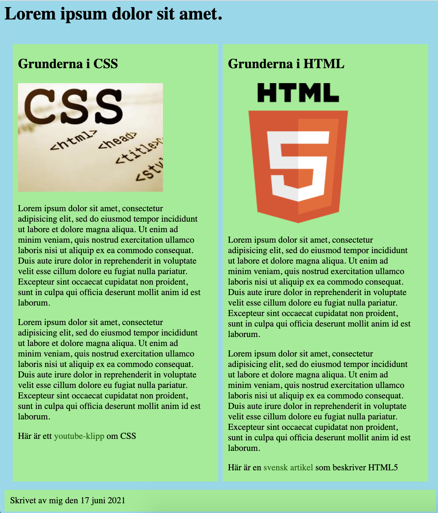

Övningsuppgift 2
Övningsuppgift 2 - Rätta HTML och skapa layout med CSS
Rätta en färdig HTML-fil, skapa en CSS-fil och publicera resultatet på GitHub Pages.
Viktigt
Den här uppgiften måste utföras för att nå högre än E.
Du ska ha gjort Övningsuppgift 1 innan du gör denna uppgift.
Filmgenomgångar
Se filmerna om hur du ska göra uppgiften: spellista för Övningsuppgift 2.
CSS-delen börjar 11:20 in i första filmen: börja vid CSS-genomgången.
Startfiler
Ladda ner zip-filen och packa upp den. Filerna ska ligga i en mapp som heter ovn2.
- ovn2.zip - innehåller
index.html,html.webpochcss.webp.
Uppgift
- Rätta till eventuella fel i HTML-filen så att
index.htmlklarar HTML-valideringen. - Ändra inget annat än felen i HTML-filen. Ändra inte ens
<link>-elementet. - Skapa en CSS-fil som kopplas till
index.htmlvia den länk som redan finns i HTML-filen. - Styla sidan enligt kraven nedan.
- Validera både HTML och CSS.
- Publicera koden på GitHub och sidan med GitHub Pages.
Krav på CSS
- Ändra alla fonter till
Verdana, sans-serif. - Använd svart text och se till att texten syns tydligt.
- Byt bakgrundsfärg på
bodytill en ljus färg som inte är vit. - Byt bakgrundsfärg på
articleochfootertill en annan ljus färg. - Ändra de två länkarna, alltså
<a>-elementen, till en lämplig mörkare färg än bakgrundsfärgen. - Ta bort understrecken från länkarna.
- Se till att understrecket kommer fram när man hovrar över länkarna.
- Använd Grid eller Flexbox för att lägga
articlei två spalter.
Exempel
Bilden visar ungefär hur en färdig sida kan se ut. Din sida behöver inte vara exakt likadan, men den ska följa kraven.

Validering
Både HTML-koden och CSS-koden ska klara W3C-validering.
Publicering
Lägg upp koden på GitHub och publicera sidan med GitHub Pages. Lämna in både länken till koden och länken till den publicerade sidan.
Exempel på länkar:
- Koden på GitHub: https://github.com/paubel/web1-02-first-web-page
- GitHub Pages: https://paubel.github.io/web1-02-first-web-page/
Checklista för inlämning
- Du har laddat ner
ovn2.zipoch packat upp filerna i mappenovn2. - HTML-felen är rättade utan att du har ändrat annat innehåll i HTML-filen.
- Du har skapat CSS-filen som
index.htmllänkar till. - Du har använt
Verdana, sans-serifpå all text. - Du har använt ljusa bakgrundsfärger enligt kraven.
- Länkarna har mörkare färg, saknar understreck normalt och får understreck vid hover.
articleligger i två spalter med Grid eller Flexbox.- HTML och CSS är validerade.
- Du lämnar in både GitHub-länken och GitHub Pages-länken.